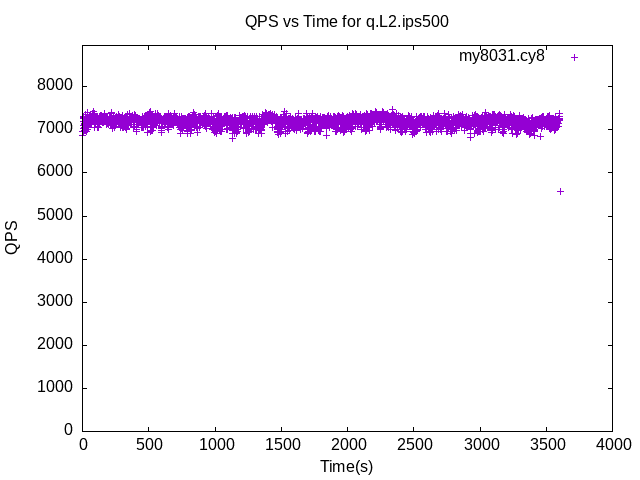

These have results per 1-second interval for: insert rate (IPS), max insert reponse time, query rate (QPS) and max query response time.
The results are from 1 client while the test may have N clients where N > 1.
The test is run with a rate limit for the number of inserts/s. In some cases the DBMS is unable to sustain that rate. When a DBMS can sustain that rate IPS will be a horizontal line.
Contents
my8031.cy8: IPS
my8031.cy8
my8031.cy8: max insert response time
my8031.cy8
my8031.cy8: QPS
my8031.cy8
my8031.cy8: max query response time
my8031.cy8
fbmy8028.cy9c: IPS
fbmy8028.cy9c
fbmy8028.cy9c: max insert response time
fbmy8028.cy9c
fbmy8028.cy9c: QPS
fbmy8028.cy9c
fbmy8028.cy9c: max query response time
fbmy8028.cy9c
pg151.cx7: IPS
pg151.cx7
pg151.cx7: max insert response time
pg151.cx7
pg151.cx7: QPS
pg151.cx7
pg151.cx7: max query response time
pg151.cx7